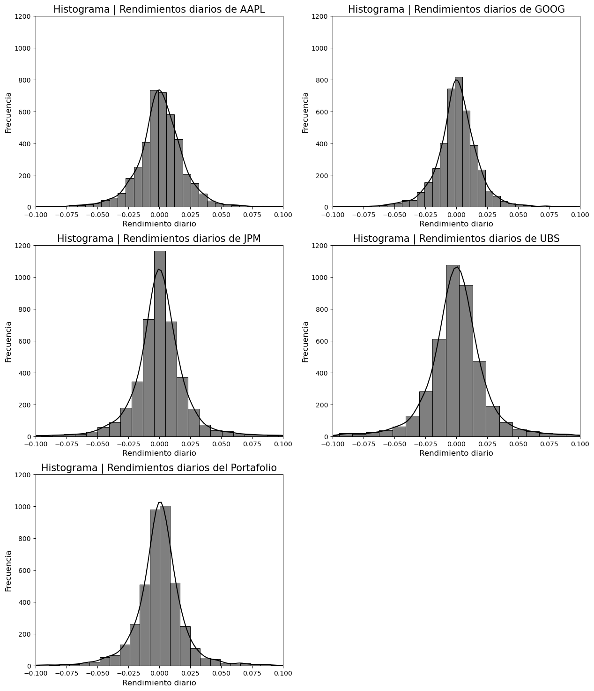

import numpy as np
import pandas as pd
import seaborn as sns
import matplotlib.pyplot as plt
from scipy.stats import norm, kurtosis, tVaR y cVaR de acciones y portafolios de inversión
datos = pd.read_csv('https://drive.google.com/uc?id=1NXn1XBfAaRKNOjf45mcwIWhC8vcvxcmg&export=download&authuser=0')
datos.columns = ['Fecha', 'AAPL', 'GOOG', 'JPM', 'UBS']
datos['Fecha'] = pd.to_datetime(datos['Fecha'], dayfirst = True)# Número de cada acción en el portafolio 2 (el bancario)
portafolio_bancario = np.array([10, 10, 50, 50])
# Lista que vamos a estar ocupando en el resto del código
acciones = ['AAPL', 'GOOG', 'JPM', 'UBS'] # Precio diario del portafolio
datos['Portafolio'] = datos[acciones].dot(portafolio_bancario)
# Rendimiento diario logarítmico
for accion in acciones+['Portafolio']:
datos[accion+'_rend'] = np.log(datos[accion]/datos[accion].shift(1))
#P&L diario
for accion in acciones+['Portafolio']:
datos[accion+'_P&L'] = datos[accion] - datos[accion].shift(1) datos.dropna(inplace = True)
datos.reset_index(drop = True, inplace = True)# diccionarios que van a almacenar promedio, desviación estándar y
# varianza de los rendimientos diarios de cada acción y del portafolio
promedio_rendimientos = {}
std_rendimientos = {}
var_rendimientos = {}
for accion in acciones+['Portafolio']:
indice = accion+'_rend'
accion_rendimientos = datos.loc[:,indice]
promedio_rendimientos[indice] = np.mean(accion_rendimientos)
std_rendimientos[indice] = np.std(accion_rendimientos)
var_rendimientos[indice] = std_rendimientos[indice]**2resumen_estadisticas = pd.DataFrame([promedio_rendimientos, std_rendimientos, var_rendimientos],
index = ['Promedio', 'Desv est', 'Varianza'])
# Tabla de promedio, desviación estándar y varianza de los rendimientos logarítmicos diarios por acción y del portafolio
resumen_estadisticas.round(6)| AAPL_rend | GOOG_rend | JPM_rend | UBS_rend | Portafolio_rend | |
|---|---|---|---|---|---|
| Promedio | 0.000983 | 0.000541 | 0.000262 | -0.000272 | 0.000160 |
| Desv est | 0.020319 | 0.018717 | 0.024617 | 0.027529 | 0.022418 |
| Varianza | 0.000413 | 0.000350 | 0.000606 | 0.000758 | 0.000503 |
# Histogramas de los rendimientos diarios por acción y del portafolio
ejexlim = (-0.1, 0.1)
ejeylim = (0,1200)
tamaño_titulo = 15
tamaño_etiquetas = 12
fig, axes = plt.subplots(3, 2, figsize=(15, 18))
sns.histplot(ax = axes[0,0], data = datos['AAPL_rend'], color = 'k', kde = True, bins = 50)
axes[0,0].set_xlabel('Rendimiento diario', fontsize = tamaño_etiquetas)
axes[0,0].set_ylabel('Frecuencia', fontsize = tamaño_etiquetas)
axes[0,0].set_title('Histograma | Rendimientos diarios de AAPL', fontsize = tamaño_titulo)
axes[0,0].set_xlim(ejexlim)
axes[0,0].set_ylim(ejeylim)
sns.histplot(ax = axes[0,1], data = datos['GOOG_rend'], color = 'k', kde = True, bins = 50)
axes[0,1].set_xlabel('Rendimiento diario', fontsize = tamaño_etiquetas)
axes[0,1].set_ylabel('Frecuencia', fontsize = tamaño_etiquetas)
axes[0,1].set_title('Histograma | Rendimientos diarios de GOOG', fontsize = tamaño_titulo)
axes[0,1].set_xlim(ejexlim)
axes[0,1].set_ylim(ejeylim)
sns.histplot(ax = axes[1,0], data = datos['JPM_rend'], color = 'k', kde = True, bins = 50)
axes[1,0].set_xlabel('Rendimiento diario', fontsize = tamaño_etiquetas)
axes[1,0].set_ylabel('Frecuencia', fontsize = tamaño_etiquetas)
axes[1,0].set_title('Histograma | Rendimientos diarios de JPM', fontsize = tamaño_titulo)
axes[1,0].set_xlim(ejexlim)
axes[1,0].set_ylim(ejeylim)
sns.histplot(ax = axes[1,1], data = datos['UBS_rend'], color = 'k', kde = True, bins = 50)
axes[1,1].set_xlabel('Rendimiento diario', fontsize = tamaño_etiquetas)
axes[1,1].set_ylabel('Frecuencia', fontsize = tamaño_etiquetas)
axes[1,1].set_title('Histograma | Rendimientos diarios de UBS', fontsize = tamaño_titulo)
axes[1,1].set_xlim(ejexlim)
axes[1,1].set_ylim(ejeylim)
sns.histplot(ax = axes[2,0], data = datos['Portafolio_rend'], color = 'k', kde = True, bins = 50)
axes[2,0].set_xlabel('Rendimiento diario', fontsize = tamaño_etiquetas)
axes[2,0].set_ylabel('Frecuencia', fontsize = tamaño_etiquetas)
axes[2,0].set_title('Histograma | Rendimientos diarios del Portafolio', fontsize = tamaño_titulo)
axes[2,0].set_xlim(ejexlim)
axes[2,0].set_ylim(ejeylim)
fig.delaxes(axes[2,1])
plt.savefig('C:/Users/Erick/Documents/Carrera/Semestre 6/MCF/Examen 2/Histogramas/histogramas.svg')
#plt.show()
1 VaR y cVaR Monte Carlo
1.1 Para cada acción
# El número de acciones se calcula dividiendo 1,000,000 entre el precio
# de la acción, o del portafolio, en la última fecha de nuestros datos.
num_acciones = {}
for accion in acciones+['Portafolio']:
S0 = datos[accion].iloc[-1]
num_acciones[accion] = int(1000000 / S0) simulaciones = {}
VaR_MC = {}
cVaR_MC = {}
for accion in acciones:
simulaciones[accion] = pd.DataFrame()
simulaciones[accion]['Sim_Z'] = np.random.standard_normal(size = 1000000)
S0 = datos[accion].iloc[-1] # El precio de la acción en la última fecha de nuestros datos
mu = promedio_rendimientos[accion+'_rend']
sigma = std_rendimientos[accion+'_rend']
# 1,000,000 de simulaciones del precio de la acción a un horizonte de 1 día
simulaciones[accion]['Sim_S1'] = simulaciones[accion]['Sim_Z'].map(lambda x : S0*np.exp((mu-(sigma**2)/2) + sigma*x))
# 1,000,000 de simulaciones de la pérdida o ganancia de la acción a un horizonte de 1 día
simulaciones[accion]['P&L'] = simulaciones[accion]['Sim_S1'].map(lambda x : x-S0)
# Como el VaR es una medida que cumple la homogeneidad positiva, el VaR del portafolio de $1,000,000 se obtiene
# multiplicando el VaR de una acción por el número de acciones que se pueden comprar con $1,000,000, considerando
# el precio de la acción en la última fecha de nuestros datos
VaR_MC[accion] = - num_acciones[accion] * np.percentile(simulaciones[accion]['P&L'], 5)
# Para calcular el cVaR calculamos el promedio de las pérdidas que superan a VaR/(número de acciones) y este valor
# se multiplica por el número de acciones
cVaR_MC[accion] = - num_acciones[accion] * np.mean(simulaciones[accion][simulaciones[accion]['P&L'] < - VaR_MC[accion]/num_acciones[accion]]['P&L'])1.2 Para el portafolio
# Matriz de covarianzas de los rendimientos diarios de cada acción
matriz_cov = datos[['AAPL_rend', 'GOOG_rend', 'JPM_rend', 'UBS_rend']].cov()
# Descomposición de Cholesky de nuestra matriz de covarianzas
matriz_cholesky = np.linalg.cholesky(matriz_cov)
# Matriz de simulaciones de 1,000,000 x 4 de una normal estándar.
sim_Z = np.random.standard_normal(size = (1000000, 4))
# Producto entre la descomposición de cholesky y la matriz de simulaciones.
cholesky_por_Z = pd.DataFrame((matriz_cholesky @ sim_Z.T).T)
cholesky_por_Z.columns = accionessimulaciones_portafolio = pd.DataFrame()
for accion in acciones:
S0 = datos[accion].iloc[-1]
mu = promedio_rendimientos[accion+'_rend']
sigma = std_rendimientos[accion+'_rend']
# Fórmula vista en clase para simular precios a un horizonte de un día de un portafolio.
simulaciones_portafolio[accion+'_S1'] = cholesky_por_Z[accion].map(lambda x: S0*np.exp(mu - (sigma**2)/2 + x))
for accion in acciones:
S0 = datos[accion].iloc[-1]
simulaciones_portafolio[accion+'_P&L'] = simulaciones_portafolio[accion+'_S1'].map(lambda x: x-S0)
simulaciones_portafolio['Portafolio_P&L'] = simulaciones_portafolio.iloc[:,4:8].dot(portafolio_bancario)VaR_MC['Portafolio'] = - num_acciones['Portafolio'] * np.percentile(simulaciones_portafolio['Portafolio_P&L'], 5)
cVaR_MC['Portafolio'] = - num_acciones['Portafolio'] * np.mean(simulaciones_portafolio[simulaciones_portafolio['Portafolio_P&L']
< - VaR_MC['Portafolio']/num_acciones['Portafolio']]['Portafolio_P&L'])MC_resumen = pd.DataFrame([VaR_MC, cVaR_MC], index = ['VaR', 'cVaR'])
MC_resumen.round(2)| AAPL | GOOG | JPM | UBS | Portafolio | |
|---|---|---|---|---|---|
| VaR | 32138.26 | 30022.43 | 39734.44 | 44973.57 | 33014.10 |
| cVaR | 40288.74 | 37531.60 | 49490.88 | 55798.30 | 41158.01 |
2 VaR y cVaR Histórico
# Para calcular el VaR histórico multiplicamos -1,000,000 por el percentil 5% de los rendimientos diarios.
VaR_historico = {accion: -1000000*np.percentile(datos[accion+'_rend'], 5) for accion in acciones}
# Para calcular el cVaR obtenemos la media de los rendimientos diarios menores a -VaR/1,000,000; luego multiplicamos
# este valor por 1,000,000.
cVaR_historico = {accion: -1000000*np.mean(datos[datos[accion+'_rend'] < -VaR_historico[accion]/1000000][accion+'_rend']) for accion in acciones}historico_resumen = pd.DataFrame([VaR_historico, cVaR_historico], index = ['VaR', 'cVaR'])
historico_resumen.round(2)| AAPL | GOOG | JPM | UBS | |
|---|---|---|---|---|
| VaR | 30512.85 | 28064.90 | 34288.78 | 38166.36 |
| cVaR | 47945.33 | 44264.27 | 57354.51 | 68046.34 |
3 VaR y cVaR Paramétrico Normal
En esta metodología definimos la variable aleatoria \(X_{t}^{h}\), la cual representa el rendimiento descontado a un horizonte \(h\), es decir, \[X_{t}^{h} = \frac{B_hP_{t+h}-P_t}{P_t}\text{,}\] donde \(B_h\) es el factor de descuento del intervalo \([t, \, t+h]\) y \(P_i\) es el precio a tiempo \(i\).
Bajo el supuesto de que \[X_{t}^{h} \sim N(\mu_{t,h},\, \sigma_{t,h}) \text{,}\] obtenemos que \[VaR_{t,c}^h = \varPhi^{-1}(c)\sigma_{t,h}-\mu_{t,h} \text{,}\] donde \(\varPhi\) denota la función de distribución de una variable aleatoria normal estándar y $ c ! = ! 1!-!$ es el nivel de confianza, el cual, para estos ejercicios, estamos considerando del \(95\%\).
Si sabemos que a tiempo \(t\) el precio de nuestro activo es de \(P_t\), el \(VaR_{t,c}^h\) en términos monetarios se calcula como \[VaR_{t,c}^h = P_t \left(\varPhi^{-1}(c)\sigma_{t,h}-\mu_{t,h}\right) \text{.}\]
Por otra parte, por definición tenemos que \[cVaR_\alpha \left(X_{t}^{h}\right) = - E \left( X_{t}^{h} \, | \, X_{t}^{h} < - VaR_{t,c}^h \right) \text{.}\]
De aquí se puede demostrar que \[cVaR_\alpha \left(X_{t}^{h}\right) = \alpha^{-1} \varphi \left( \varPhi^{-1}(\alpha) \right) \sigma_{t,h} - \mu_{t,h} \text{,}\] donde \(\varphi\) denota la función de densidad de probabilidad de una variable aleatoria normal estándar.
Finalmente, en términos monetarios, tenemos que \[cVaR_\alpha \left(X_{t}^{h}\right) = P_t \left( \alpha^{-1} \varphi \left( \varPhi^{-1}(\alpha) \right) \sigma_{t,h} - \mu_{t,h} \right)\]
Fuente: Alexander, C. Value-at-Risk Models.
alpha = 0.05
phi_inversa_c = norm.ppf(1-alpha)
phi_inversa_alpha = norm.ppf(alpha)
pdf_phi_inversa_alpha = norm.pdf(phi_inversa_alpha)
pt = 1000000VaR_parametrico = {}
cVaR_parametrico = {}
for accion in acciones+['Portafolio']:
mu = promedio_rendimientos[accion+'_rend']
sigma = std_rendimientos[accion+'_rend']
VaR_parametrico[accion] = pt * (sigma * phi_inversa_c - mu)
cVaR_parametrico[accion] = pt * (sigma * pdf_phi_inversa_alpha / alpha - mu)parametrico_resumen = pd.DataFrame([VaR_parametrico, cVaR_parametrico], index = ['VaR', 'cVaR'])
parametrico_resumen.round(2)| AAPL | GOOG | JPM | UBS | Portafolio | |
|---|---|---|---|---|---|
| VaR | 32438.93 | 30244.79 | 40229.60 | 45553.08 | 36715.24 |
| cVaR | 40929.32 | 38065.72 | 50516.16 | 57056.19 | 46082.99 |
4 Pregunta rescate - Opción 2
5 VaR paramétrico t-Student
Suponemos que la variable aleatoria de rendimientos diarios \(X\), con media \(\mu\) y desviación estándar \(\sigma\), tiene una distribución t-Student generalizada, es decir, \[X = \mu + \sigma T \text{,}\] donde \(T\) es una variable aleatoria t-Student standarizada.
Así, la fórmula del VaR paramétrico t-Student es \[VaR_c = \sqrt{v^{-1}(v-2)} \, t_v^{-1}(c) \, \sigma - \mu \text{,}\] donde \(t_v^{-1}(c)\) es el cuantil \(c\) de la distribución t-Student estándar con \(v\) grados de libertad.
Fuente: Alexander, C. Value-at-Risk Models.
gl = {} # Grados de libertad
# Estimamos los grados de libertad de los rendimientos diarios
# de cada acción y del portafolio usando Máxima Verosimilitud.
for accion in acciones+['Portafolio']:
gl[accion] = t.fit(datos[accion+'_rend'])[0]VaR_t = {}
for accion in acciones+['Portafolio']:
v = gl[accion]
mu = promedio_rendimientos[accion+'_rend']
sigma = std_rendimientos[accion+'_rend']
VaR_t[accion] = np.sqrt((v-2)/v) * t.ppf(0.95, v) * sigma - mu
VaR_t[accion] = 1000000 * VaR_t[accion]curtosis = {}
for accion in acciones+['Portafolio']:
curtosis[accion] = kurtosis(datos[accion+'_rend'])resumen_t = pd.DataFrame([VaR_t, curtosis], index = ['VaR', 'Curtosis'])
resumen_t.round(2)| AAPL | GOOG | JPM | UBS | Portafolio | |
|---|---|---|---|---|---|
| VaR | 28051.67 | 24071.84 | 21042.06 | 27360.53 | 18962.35 |
| Curtosis | 6.43 | 8.79 | 15.68 | 16.43 | 15.92 |